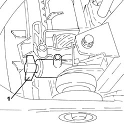
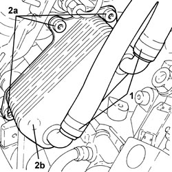
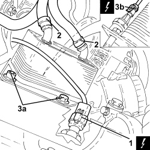
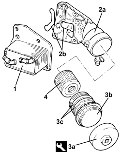

1084C10 ENGINE OIL HEAT EXCHANGER - R + R
- Path
- Procedures > 10 ENGINE > 1084 ENGINE LUBRICATION > 1084C ENGINE OIL COOLING CIRCUIT > 1084C10 ENGINE OIL HEAT EXCHANGER - R + R
- Kind
- repair procedure (removal / refitting; the operation number is the code)
- Applies to
- engines: 1.9 JTS, 2.2 JTS, 3.2 JTS, 1.9 JTD 8V, 1.9 JTD 16V; all production periods
- Interactive page
- https://sloeber94.github.io/elrnDB/alfa/159/en/#/939010660
Applies to: engines: 1.9 JTS, 2.2 JTS; all production periods
 Removing
Removing
 Refitting
Refitting- Position the vehicle on a lift.
Op. 5530B52 BATTERY SUPPORT/DRIP TRAY - R.R
1. Undo the radiator coolant drain plug.

Applies to: engines: 1.9 JTS, 2.2 JTS; all production periods
1. Loosen the bands and disconnect the engine coolant inlet and outlet pipes, engine oil heat exchanger side.
2. Undo the bolts (2a) and remove the engine oil heat exchanger (2b).

Applies to: engines: 1.9 JTS, 2.2 JTS; all production periods
Refitting
Removing1. Place the engine oil heat exchanger (1a) in its housing and secure it tightening the bolts (1b) to the recommended torque.
2. Connect the engine coolant inlet and outlet pipes, engine oil heat exchanger side and tighten the bands.

Applies to: engines: 1.9 JTS, 2.2 JTS; all production periods
- Tighten the coolant drain plug to the radiator.
Op. 5530B52 BATTERY SUPPORT/DRIP TRAY - R.R
Op. 0010T20 ENGINE COOLANT - CHANGE
- Remove the vehicle from the lift.
Applies to: engines: 1.9 JTD 8V, 1.9 JTD 16V; all production periods
Removing
Refitting- Position the vehicle on a lift.
- Make sure that the ignition key is in the OFF position, then disconnect the battery terminal (-).
Description | Connector | |
|---|---|---|
- | Battery |
Op. 7055B54 UNDER ENGINE PROTECTION/GUARD - R.R.
1. Undo the radiator coolant drain plug.

Applies to: engines: 1.9 JTD 8V, 1.9 JTD 16V; all production periods
1. Disconnect the electrical connection from the engine oil level sensor.
Description | Connector | |
|---|---|---|
1 | Engine oil level sensor |
2. Loosen the bands and disconnect the engine coolant inlet and outlet pipes from the engine oil heat exchanger.
3. Undo the bolts (3a) and remove the engine oil heat exchanger as necessary to disconnect the electrical connection from the engine oil pressure switch (3b).
Description | Connector | |
|---|---|---|
3b | Insufficient engine oil pressure sensor (switch) |

Applies to: engines: 1.9 JTD 8V, 1.9 JTD 16V; all production periods
1. Remove the engine oil heat exchanger.
2. Remove the heat exchanger and engine oil filter mounting (2a), complete with gaskets (2b).
3. Working at the bench, place the heat exchanger and engine oil filter mounting in a vice then, using the tool (3a), undo and remove the engine oil filter cover (3b) complete with O-Ring seals (3c).
Tool | Description | Function | Validity |
|---|---|---|---|
2000003900 | Spanner | Loosen/ tighten engine oil filter cover | 1.9 JTD 8V 1.9 JTD 16V |
4. Remove the engine oil cartridge filter.

Applies to: engines: 1.9 JTD 8V, 1.9 JTD 16V; all production periods
Refitting
Removing- Place the engine oil filter cartridge in its housing.
- Place the engine oil filter cover complete with a new O-rings in its housing and tighten it using the tool.
Tool | Description | Function | Validity |
|---|---|---|---|
2000003900 | Spanner | Loosen/ tighten engine oil filter cover | 1.9 JTD 8V 1.9 JTD 16V |
- Place the heat exchanger and engine oil filter mounting in position complete with new gaskets.
- Connect the electrical connection to the engine oil pressure switch then place the engine oil heat exchanger in position and tighten the bolts to the recommended torque.
Component | Fastening | dia | Value (daNm) | Validity |
|---|---|---|---|---|
Engine oil heat exchanger | Bolt | M10 | (support side) 4.5 - 5.5 | 1.9 JTD 8V 1.9 JTD 16V |
- Connect the engine coolant inlet and outlet pipes to the engine oil heat exchanger and tighten the bands.
- Connect the electrical connection to the engine oil level sensor.
- Tighten the coolant drain plug to the radiator.
- Connect the negative battery terminal.
Op. 0010T20 ENGINE COOLANT - CHANGE
Op. 7055B54 UNDER ENGINE PROTECTION/GUARD - R.R.
- Remove the vehicle from the lift.
Applies to: engines: 3.2 JTS; all production periods
Removing
RefittingOp. 0010T84 COOLANT FOR AIR CONDITIONING SYSTEM - DEHYDRATE AND REPRESSURIZE
Op. 0010T20 ENGINE COOLANT - CHANGE
Op. 1080B92 LEFT UPPER LAMBDA SENSOR - R.R.
Op. 7055B54 UNDER ENGINE PROTECTION/GUARD - R.R.
Op. 1072C40 LEFT EXHAUST MANIFOLD HEAT SHIELD - R.R.
Op. 1084A16 OIL DIPSTICK PIPE - R.R
Op. 1072C30 LEFT EXHAUST MANIFOLD - R + R AND REPLACE GASKET
Applies to: engines: 3.2 JTS; all production periods
Refitting
RemovingOp. 1084C15 ENGINE OIL HEAT EXCHANGE MOUNT R R
Op. 1072C30 LEFT EXHAUST MANIFOLD - R + R AND REPLACE GASKET
Op. 1084A16 OIL DIPSTICK PIPE - R.R
Op. 1072C40 LEFT EXHAUST MANIFOLD HEAT SHIELD - R.R.
Op. 7055B54 UNDER ENGINE PROTECTION/GUARD - R.R.
Op. 1080B92 LEFT UPPER LAMBDA SENSOR - R.R.
Op. 0010T20 ENGINE COOLANT - CHANGE
Op. 0010T84 COOLANT FOR AIR CONDITIONING SYSTEM - DEHYDRATE AND REPRESSURIZE
Topics linked from this page (13)
- 0010T20 ENGINE COOLANT - CHANGE
- 0010T84 COOLANT FOR AIR CONDITIONING SYSTEM - DEHYDRATE AND REPRESSURIZE
- 1072C30 LEFT EXHAUST MANIFOLD - R + R AND REPLACE GASKET
- 1072C40 LEFT EXHAUST MANIFOLD HEAT SHIELD - R.R.
- 1080B92 LEFT UPPER LAMBDA SENSOR - R.R.
- 1084A16 OIL DIPSTICK PIPE - R.R
- 1084C15 ENGINE OIL HEAT EXCHANGE MOUNT R R
- 5530B10 BATTERY - R+R
- 5530B52 BATTERY SUPPORT/DRIP TRAY - R.R
- 7055B54 UNDER ENGINE PROTECTION/GUARD - R.R.
- A001 BATTERY
- K030 LOW ENGINE OIL PRESSURE SENSOR (SWITCH)
- K032 ENGINE OIL LEVEL SENSOR